Fast Robots Labs
Below are the different lab write-ups for the Fast Robots class.
Fast Robots Labs
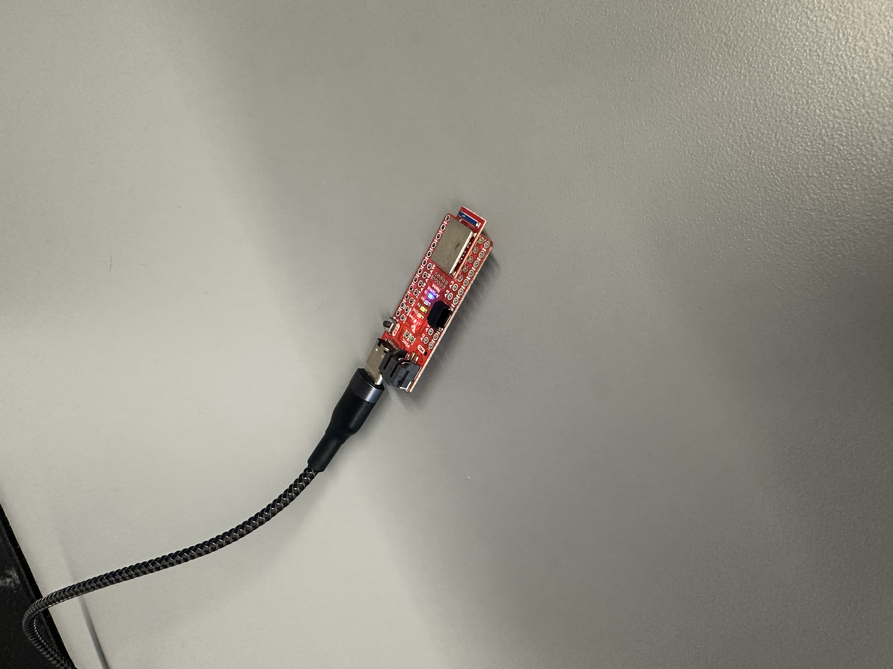
Lab 1: The Artemis board and Bluetooth.
Setup, Bluetooth connectivity, and basic robot control.
Artemis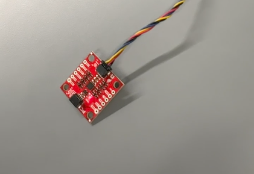
Lab 2: IMU Sensor Integration
IMU setup, accelerometer and gyroscope, data sampling.
IMU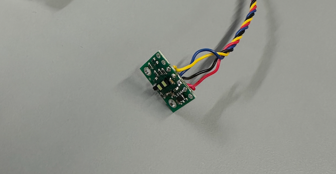
Lab 3: ToF Sensor Integration
ToF soldering, setup, testing and connecting battery to artemis.
ToF Battery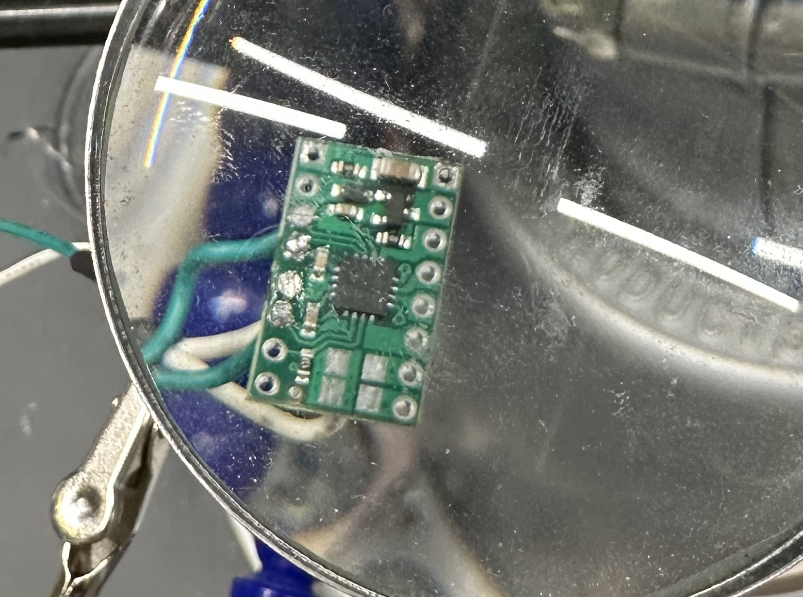
Lab 4: Motors & OL Control
Motor Driver soldering, setup, oscilloscope testing and finishing body.
Motor Drivers Open Loop Control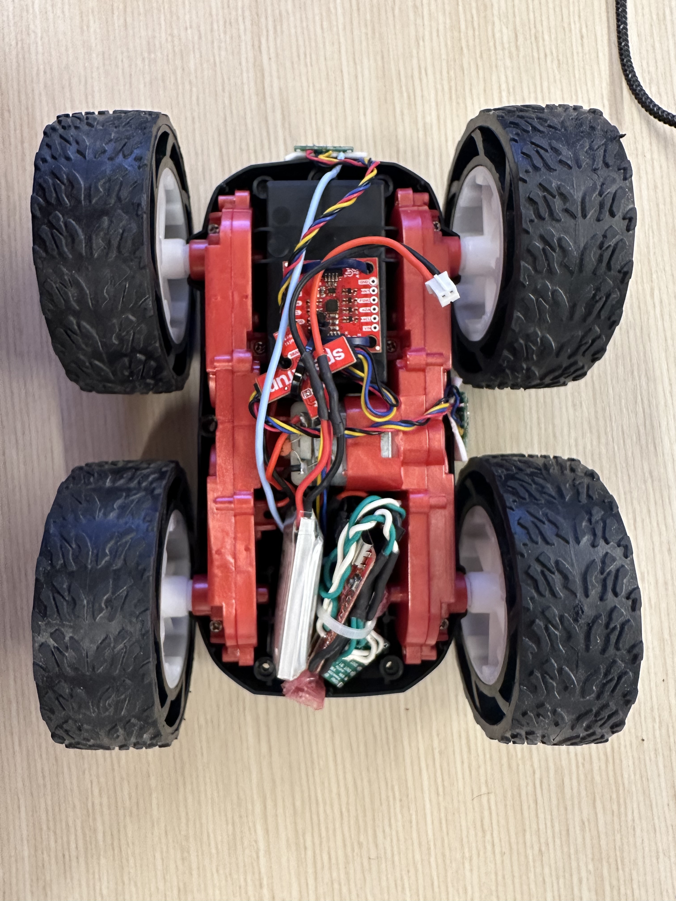
Lab 5: Linear PID & Extrapolation
Linear PID control and Linear Extrapolation of ToF measurements.
PID Extrapolation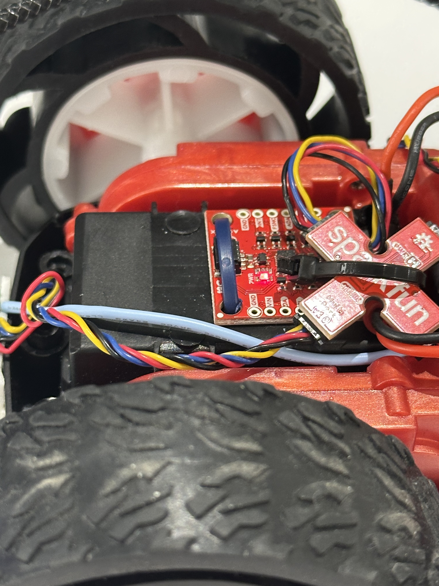
Lab 6: Orientation Control
Angular PID control using the IMU's Digital Motion Processor to obtain z-axis rotation (yaw).
PID IMU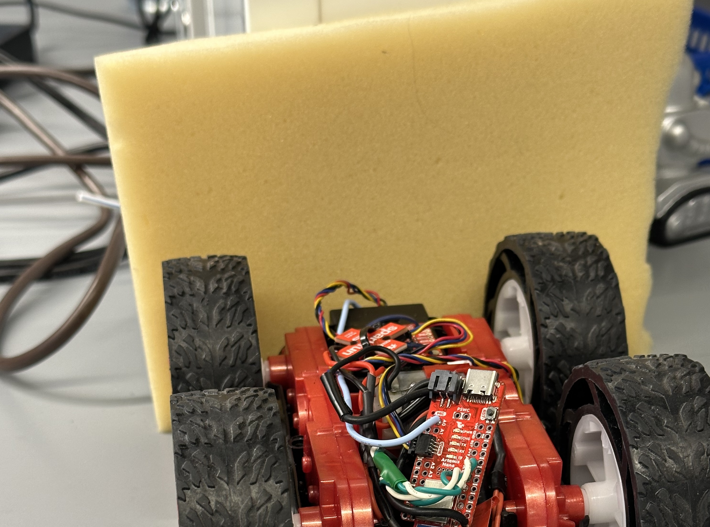
Lab 7: Kalman Filter
Employing Kalman Filter to supplement slowly sampled ToF measurements.
KF ToF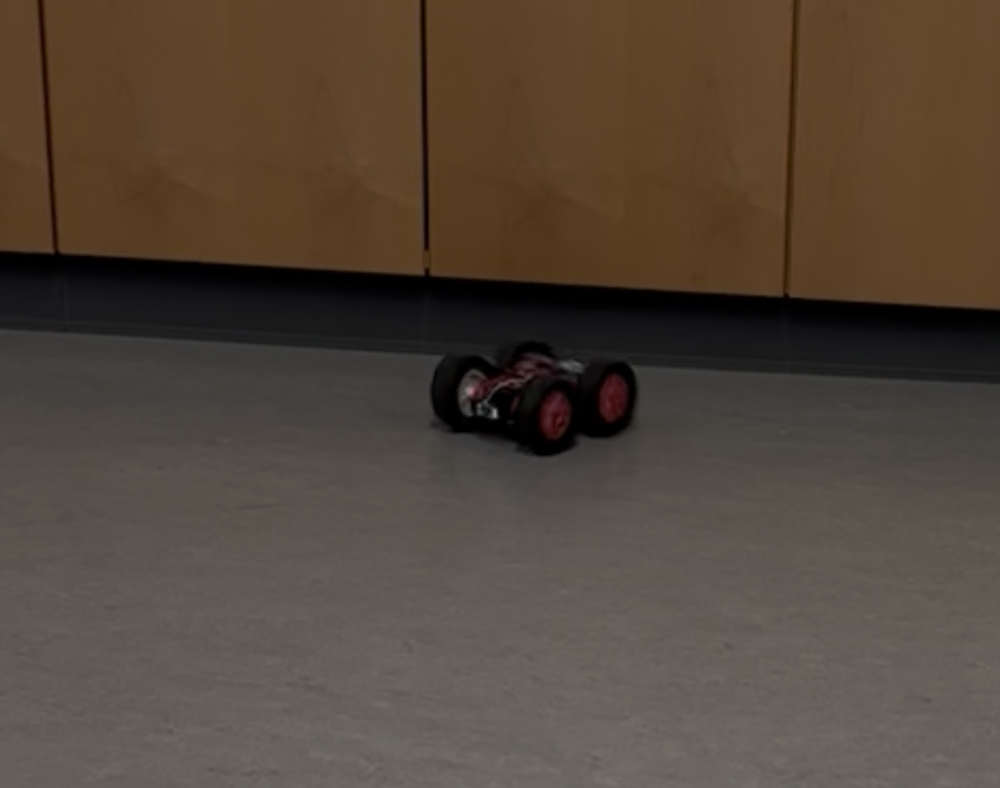
Lab 8: Stunts!
Kalman Filter implementation to have car drift a set distance from wall.
KF ToF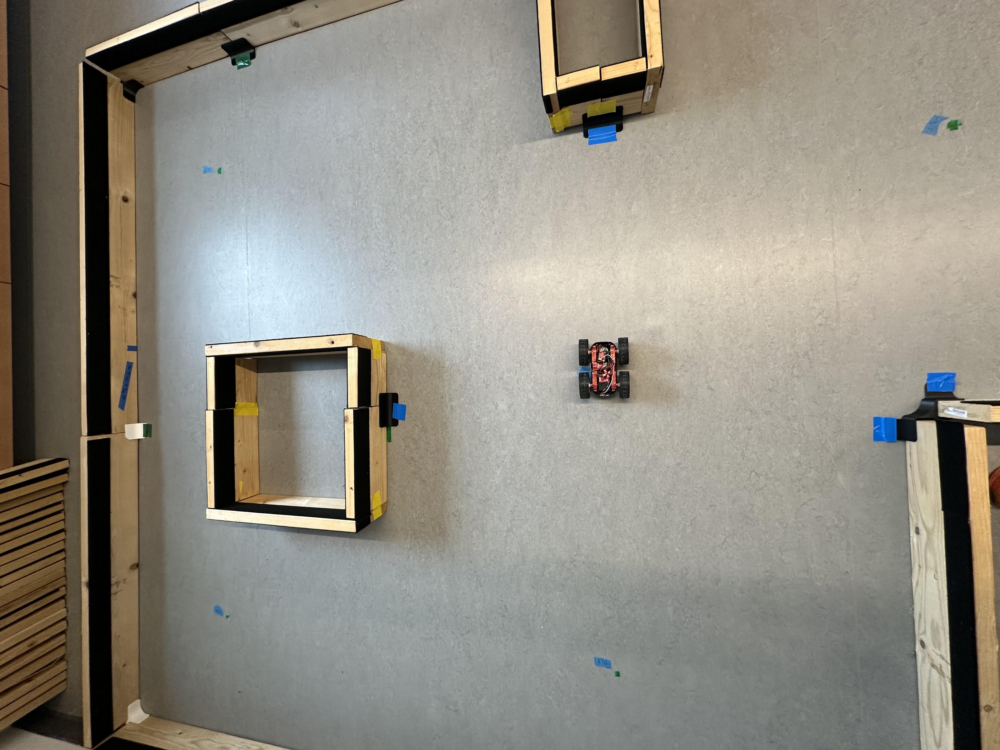
Lab 9: Mapping
ToF data collection and matrix conversion to map world of robot.
PID ToF Transformation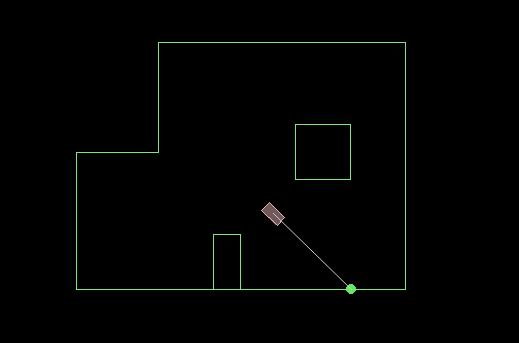
Lab 10: Grid Localization
Grid Localization using Bayes Filter in simulation.
Bayes Sim Localization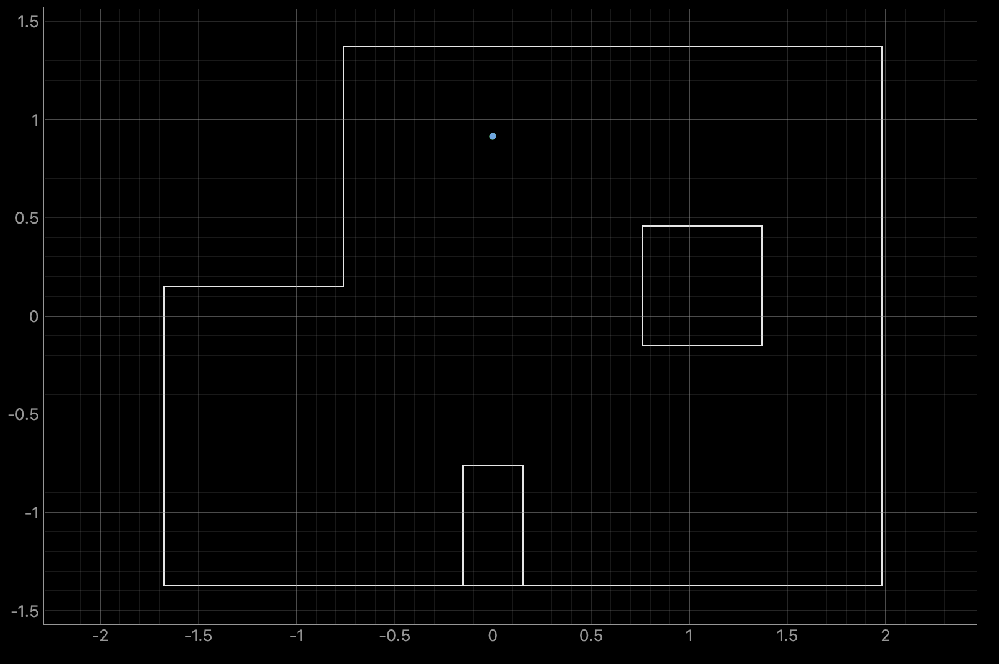
Lab 11: Real Robot Localization
Grid Localization using Bayes Filter using a real robot.
Bayes Real-world Localization